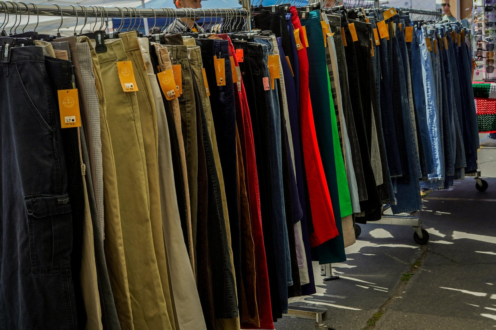

Veel all-inclusive hotels willen bij het diner een lange broek, vooral voor mannen. Vergeten mee te nemen, of geen zin om een broek in de koffer te proppen? Hier koop je er voordelig een.

Jeans Center is een populaire kledingwinkel in het hart van Kos-stad. Het draait om jeans, en er is meer: T-shirts, shorts, zomerjurken en andere dagelijkse kleding, voor mannen, vrouwen en kinderen. De prijzen zijn vriendelijk.
Adres
25is Martiou 13, Kos 853 00
Openingstijden
Ma.09:00–14:00 17:00–21:00
Di.09:00–14:00 17:00–21:00
Woe.09:00–14:00
Don.09:00–14:00 17:00–21:00
Vrij.09:00–14:00 17:00–21:00
Zat.09:00–14:00
Zon.Gesloten